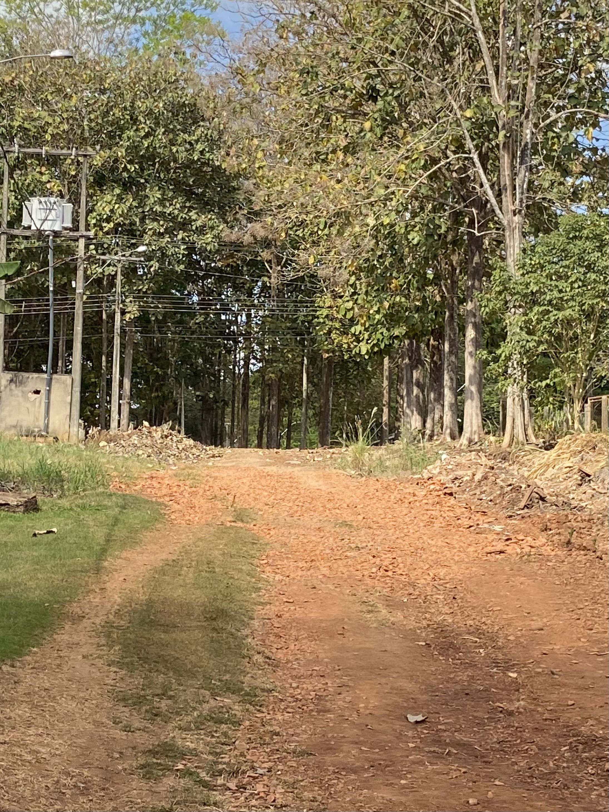
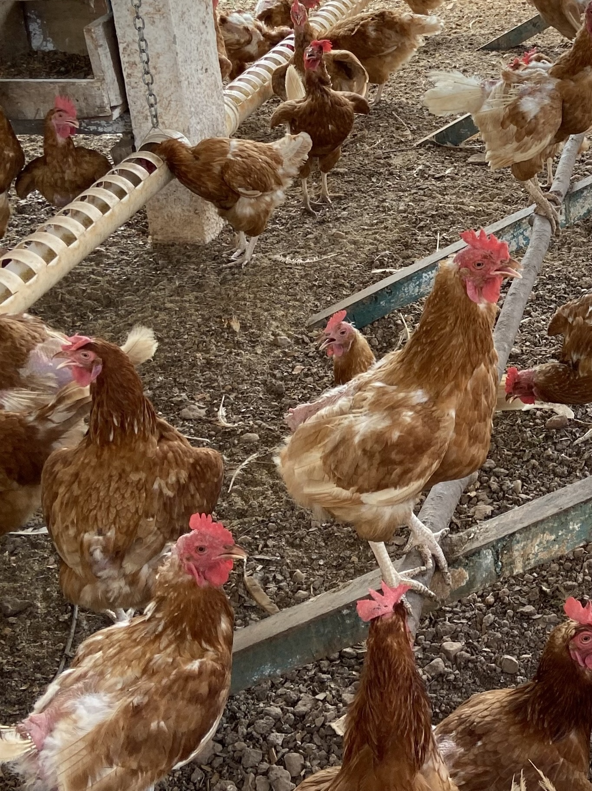
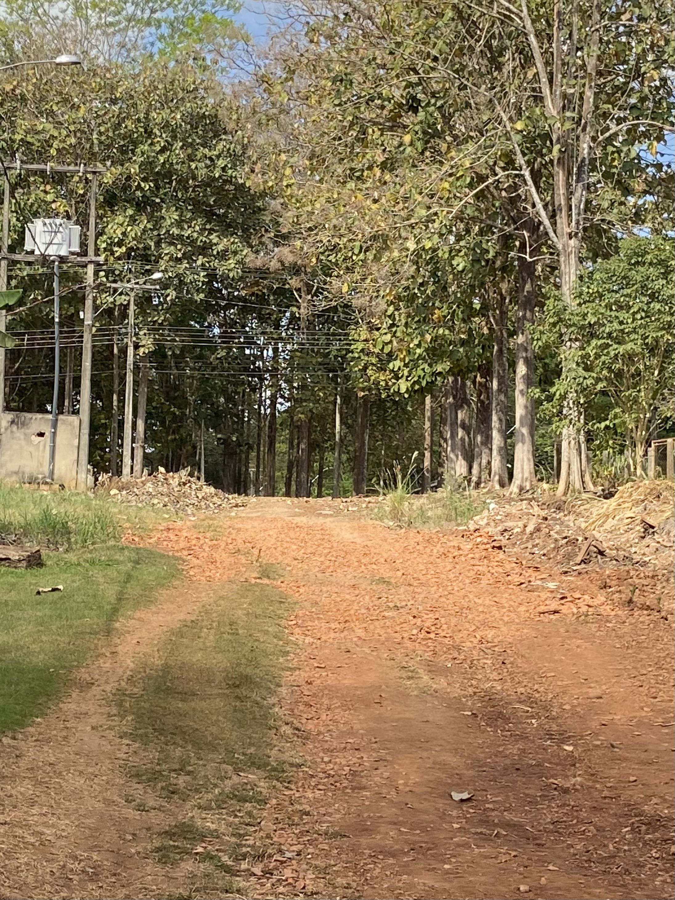
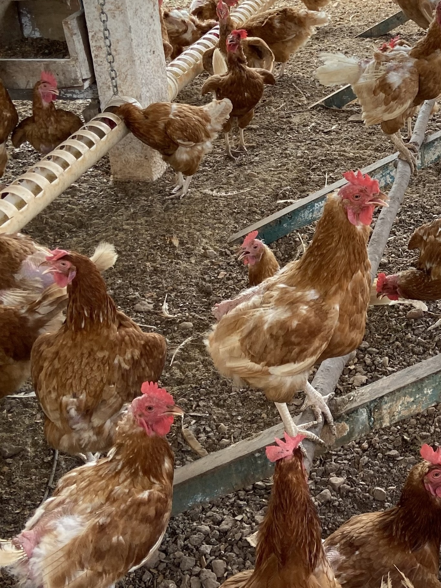

No dia 9 de agosto, os estudantes matriculados no curso de Informática do IFRO Campus Vilhena tiveram a
valiosa oportunidade de efetuar uma visita ao IFRO Campus Colorado do Oeste. O propósito dessa visita consistia em
promover a interação entre os programas acadêmicos de Informática e o ambiente voltado para a agropecuária, explorando o
uso da tecnologia dentro desse contexto. Ao chegarmos ao campus anfitrião, fomos calorosamente acolhidos e apresentados à
programação que se desdobraria ao longo do dia.
Uma das principais atividades planejadas para a visita foi a participação em uma oficina de fotografia,
bem como a exploração do projeto denominado Câmera Escura. O foco dessa atividade era estabelecer uma conexão entre a
tecnologia e o tema central da visita. Durante a oficina, tivemos a oportunidade de explorar as diversas aplicações da fotografia
como meio de expressão e comunicação, além de compreender como os conceitos relacionados à fotografia evoluíram ao longo do tempo.
Durante as discussões, enfatizou-se os desafios que enfrentamos ao
buscar conteúdo de alta qualidade na internet, especialmente em relação ao consumo de informações.
Como resposta a esse cenário, aprendemos sobre a criação de um canal de vídeos com conteúdo relevante para a comunidade.
Esses vídeos abordavam uma ampla variedade de tópicos e tinham o potencial de auxiliar a comunidade na compreensão de assuntos específicos.
Um tópico de destaque durante a visita foi a relevância da tecnologia na
condução de projetos. Ficou evidente que a tecnologia não apenas simplifica a implementação de projetos,
mas também possibilita a integração de diferentes formas de conhecimento. Fomos apresentados a projetos que envolviam a
criação de vídeos educativos sobre assuntos de interesse da comunidade local.
Ficou claro que a qualidade do conteúdo apresentado é crucial para garantir
sua eficácia. Um bom conteúdo deve ser de fácil compreensão e incorporar elementos audiovisuais bem elaborados.
Durante a visita, também observamos a transição de vídeos para formatos como podcasts, demonstrando a busca por
meios mais acessíveis e flexíveis de transmitir conhecimento.
Além disso, tivemos a oportunidade de conhecer o "IFRO Mobile", um sistema
inicialmente desenvolvido no Campus Colorado do Oeste para abordar questões relacionadas à alteração de horários.
Com o tempo, ele se tornou a principal plataforma de comunicação entre os estudantes e servidores de todos os
institutos federais, destacando como a tecnologia pode ser aplicada para solucionar problemas reais e otimizar processos internos.
Durante a visita, também exploramos os setores relacionados à criação animal e
produção agrícola do campus, permitindo-nos uma compreensão mais profunda da interseção entre a tecnologia e a a
gropecuária. Identificamos diversas oportunidades para a aplicação de soluções tecnológicas dentro desse contexto específico.
Resumindo, a visita ao IFRO Campus Colorado do Oeste foi extremamente enriquecedora e proporcionou uma visão clara de como a
tecnologia pode ser integrada de maneira eficaz em contextos diversos. As atividades e discussões promovidas durante a visita
expandiram nossa compreensão das possibilidades da tecnologia e como ela pode ser usada para promover o conhecimento e a melhoria da
comunidade.
 


